BIM-технологии для строительной отрасли Казахстана
ТОО «АэрБИМ-ХТ» (Казахстан) — инжиниринг, проектирование инженерных систем, автоматизация и разработка цифрового двойника объекта
Коротко о главном
Совместное предприятие ТОО «АэрБИМ-ХТ» соединяет 7-летнюю экспертизу BIM-проектирования инженерных систем с собственными средствами автоматизации и технологиями цифровых двойников
Экспертизы BIM-проектирования инженерных систем — ПО Revit Autodesk (специализация — слаботочные сети)
В штате инженеры-проектировщики с профильным высшим образованием
Сотрудничество с более 14 крупными проектными компаниями
Участие в сложных инженерных проектах, площадью от 50 тыс. м² (ЦОД, ЖК класса «А», МФК и пр.)
Разработанных, адаптированных семейств, более 30 торговых марок
Разработанных плагинов и утилит, ускоряющих проектные работы
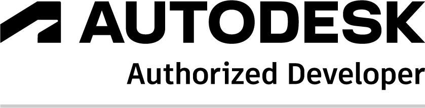
AerBIM — участник программы Autodesk Developer NetworkРЕСПУБЛИКА КАЗАХСТАН
Совместное предприятие с 7-летней экспертизой BIM

ООО «АэрБИМ»
2019 — основание
- BIM-проектирование инженерных систем; специализация — «слаботочные системы»
- Разработка модулей автоматизации и систем мониторинга на основе BIM
- С 2019 — участник Autodesk Developer Network (ADN)
ТОО «High Tech XXI»
2019 — основание
- Средства измерений для геотехнического мониторинга и мониторинга конструкций
- Автоматизированные измерительные комплексы «AMS HT»
СОВМЕСТНОЕ ПРЕДПРИЯТИЕ
ТОО «АэрБИМ-ХТ»
2025 — создание компании
- Инжиниринг, проектная деятельность
- Внедрение BIM-технологий на рынке Республики Казахстан
- Система мониторинга АСМ/СМИС на основе BIM
Проектирование инженерных систем. Раздел MEP
(в технологии BIM ПО Autodesk Revit/AutoCAD)
Противопожарные системы АСПС, АСПЗ, СОУЭ, АУПТ и пр.
системы автоматической пожарной сигнализации, оповещения и управления эвакуацией; системы автоматического пожаротушения (водяное, пенное, газовое, порошковое); системы противодымной защиты.
Системы охраны СВН, СКУД, СС, КСБ, ИТСО и пр.
системы охранной сигнализации в т.ч. периметральной; системы охранного телевидения; системы контроля и управления доступом.
Сети связи СКС, ВОЛС, РНТ, ЧФ и пр.
структурированные кабельные сети, локальные вычислительные сети; сети радиофикации, телефонизации и т.п.
Системы диспетчеризации АСУД, АСКУЭ, АСКУВТ и пр.
автоматизированная система управления и диспетчеризации инженерных систем, коммерческого учёта электроэнергии, водо- и теплопотребления.
Электрические сети ЭОМ
внутреннее электрооборудование; электрическое освещение, наружное электроснабжение; заземляющие устройства, системы выравнивания потенциалов, молниезащита и пр.


Проектирование инженерных систем. Раздел MEP(в технологии BIM ПО Autodesk Revit/AutoCAD)
От технического решения до готовой BIM-модели
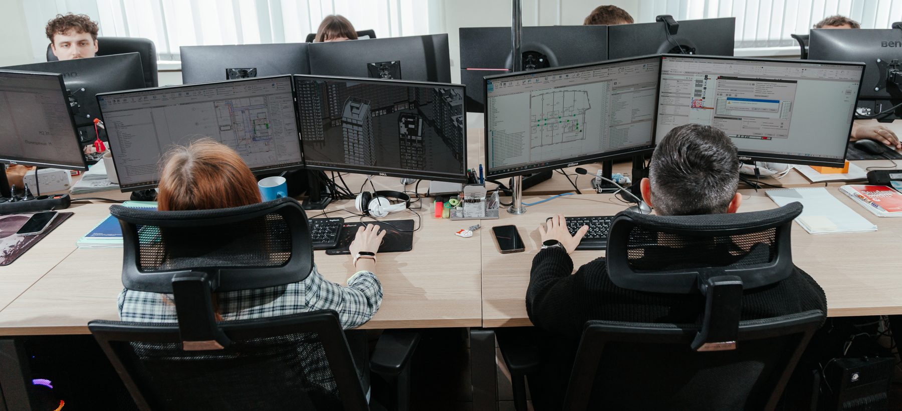

Разработка библиотек семейств(BIM-моделей оборудования)
Собственная мультивендорная база данных семейств
- Более 2000 адаптированных семейств, более 30 торговых марок (на начало 2025)
- Семейства адаптированы к шаблону AerBIM и собственным плагинам автоматизации
- Быстрая адаптация семейств сторонних разработчиков — команда «Адаптация»

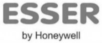

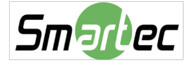

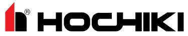

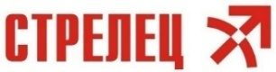
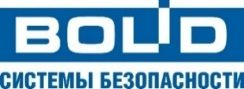
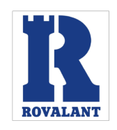


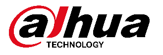


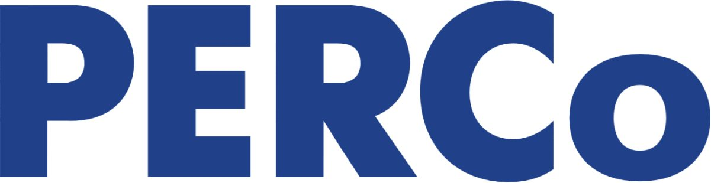

Разработка библиотек семейств(BIM-моделей оборудования)
Качество BIM-модели начинается с качества семейств
Стандарты
- «Руководство по созданию семейств» Autodesk® Revit®
- Внутренний стандарт AerBIM — проверка и тестирование семейств
- Геометрия — только штатными инструментами Revit, без импорта из AutoCAD/3Ds Max
- Семейства не требуют доработок пользователя
в каждом семействе
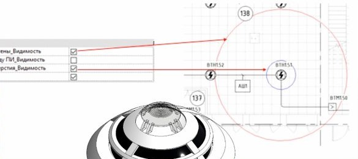
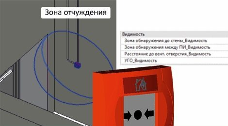
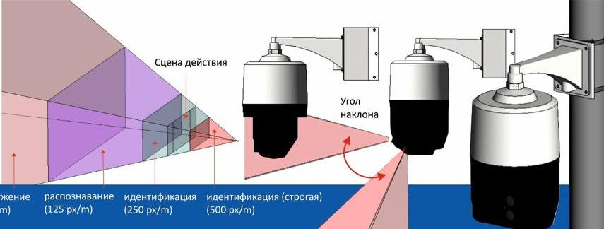
Параметризация — спецификации, расчёт токопотребления, таблицы
2D-семейства для структурных схем по ГОСТ
LOD200 для проектирования, LOD400 для заказчика
Выполненные проекты
Сложные инженерные проекты от 50 тыс. м²
Слаботочные системы и ИТБ; с 2024 г. — ОВиК, ЭОМ. ЖК класса «А», МФК, ЦОД и пр.

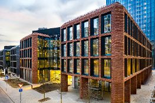

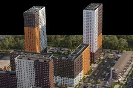
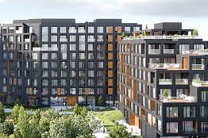
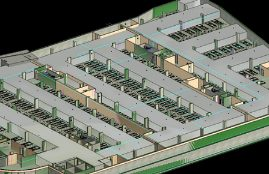
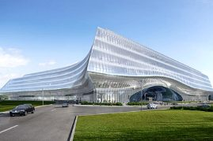
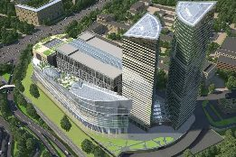
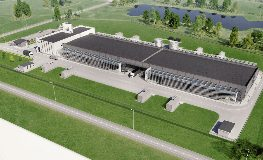

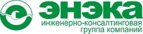


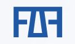

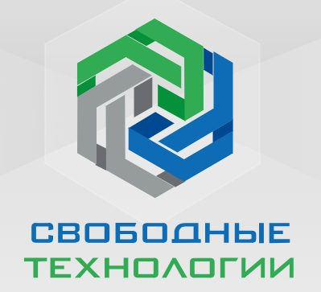

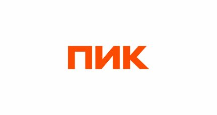
Специализация, знаковые проекты
Специализация + «команда в офисе» + средства автоматизации


Команда
Молодая команда под руководством опытных экспертов
Autodesk Revit — базовая программа для раздела MEP

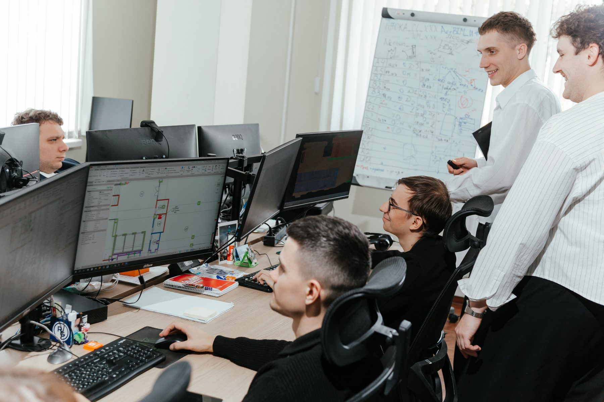
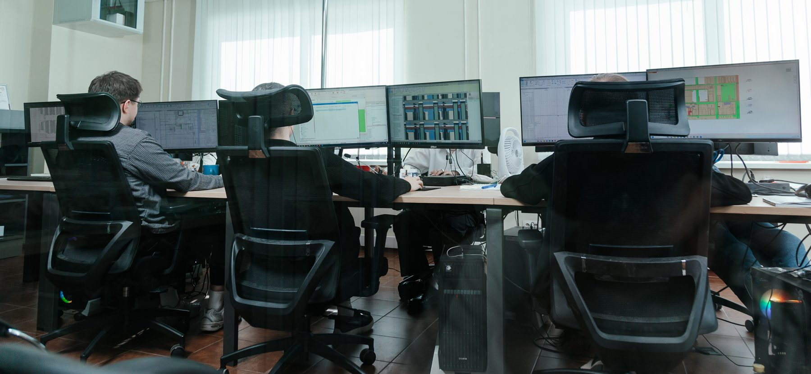


Команда
Образование и обучение
Высшее техническое образование — БНТУ, кафедры «Приборостроение», «Технические системы безопасности»
Совместная лаборатория повышения квалификации и подготовки кадров Aercom-БНТУ
Собственная программа «BIM-проектирование инженерных систем в Revit». Отбор лучших студентов
Центр EDU Aercom. Сертификаты производителей: Axis, Hikvision, Honeywell&ESSER, BOLID, Sigur, PERCo
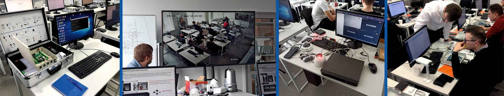
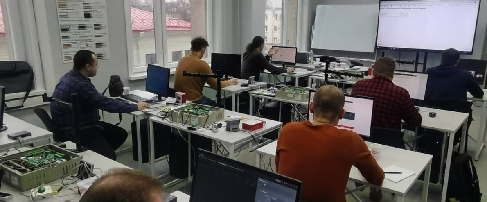

Автоматизация · Revit API
Собственные средства автоматизации проектирования
Авторизированный разработчик Autodesk
ADN Partner, Developer# CSKG0001
Автоматическая расстановка пожарных извещателей

ускорение размещения извещателей
Меньше ошибок, ниже затраты
Автоматическая маркировка оборудования на 2D-планах
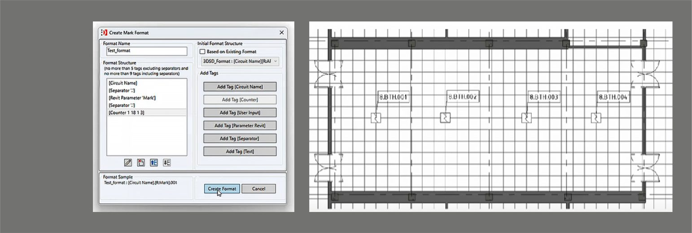
ускорение маркировки
Меньше ошибок, ниже затраты
Мультивендорный плагин 3D Security Designer

- Автоматическая расстановка извещателей и маркировка оборудования
- Разработка и адаптация функциональных семейств
- Автоматическая расстановка оборудования СКУД
- База данных из 2000+ семейств оборудования
семейств в базе плагина
Значительное сокращение временных затрат по всем операциям
Утилиты для построения кабельных журналов
Автоматическое формирование кабельных журналов для АПС, СОУЭ, охранных систем и СКУД. Рутинная и ошибкоёмкая работа — за минуты.

на журнал из 1511 строк
Автоматизация · ещё кейсы
Ещё 5 кейсов автоматизации
Извещатели под венткоробами
Поиск подходящих коробов и расстановка
Оборудование СКУД
Расстановка точек доступа
Пределы огнестойкости
Визуализация на планах и разрезах без ручного обновления
Функциональные семейства
Разработка и адаптация оборудования
Индивидуальные плагины
Под корпоративные стандарты и дедлайны заказчика
Подробное описание — Приложение №2
Мониторинг · цифровой двойник
AerBIM-monitor — система мониторинга несущих конструкций
реализованный пилот цифрового двойника: АСМ — мониторинг конструкций в Астане
Наша разработка AerBIM-monitor – система мониторинга несущих конструкций уже работает на знаковом объекте в Астане — Международном центре искусственного интеллекта Alem AI
СМИС
Разработка системы мониторинга инженерных систем СМИС/SMIS-server на основе BIM модели и собственного ПО AerBIM-Monitor/SMIS Viewer
АСМ
Автоматизированные системы мониторинга зданий и сооружений
AMS HT
Средства измерений для геотехнического мониторинга и мониторинга конструкций. Автоматизированные измерительные комплексы «AMS HT»
Готовы обсудить ваш проект
Внедрение BIM, автоматизация проектирования инженерных систем и цифровой двойник объекта — от пилота до полного жизненного цикла.